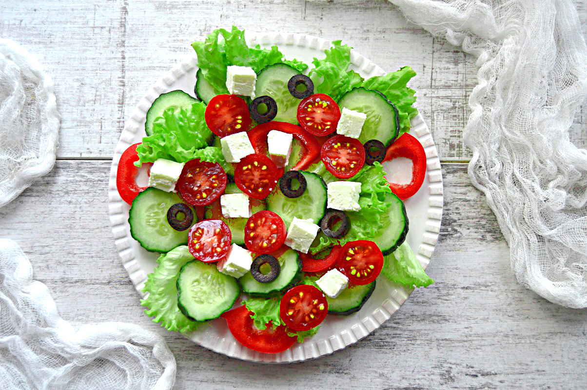

Składniki na 1 porcję
- 1 średni pomidor
- 1/2 ogórka
- 5 oliwek
- 50 g sera feta
- 1 łyżka oliwy z oliwek
- Opcjonalnie: szczypta oregano
Przygotowanie
- Umyj pomidora i ogórka, a następnie pokrój pomidora na ósemki, a ogórka w półplasterki.
- Pokrój ser feta na drobną kostkę.
- W misce ułóż warstwami pomidory, ogórki, oliwki i ser feta.
- Skrop sałatkę oliwą z oliwek i delikatnie posyp oregano, jeśli używasz.
- Podawaj od razu lub schłodź przez 10 minut w lodówce przed podaniem.